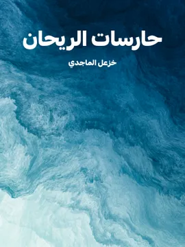

حارسات الريحان

قراءة عربية أصلية محددة النطاق في الصفحات 7، 8 من ملف PDF المرتبط، وليست تلخيصا كاملا للكتاب. نناقش ما تدعمه هذه المقاطع فقط.
حين تصبح الكتابة مهنة الروح الوحيدة
يصف الماجدي الكتابة بأنها أعظم حدث في حياته، ويقرن اكتشافها بإحساسه بالغربة عن العالم الواقعي وخوفه من مجتمع يريد انتزاع حريته وتحويله إلى رقم من أرقامه. لا يقدم نفسه نبيًا للكلمات؛ يعترف بأن الخوف دفعه كي يخترع لنفسه رقمًا صعبًا يستعصي فك رموزه، وأن مهنًا كثيرة مر بها ظلت غريبة عنه حتى استقر قراره على أن يكون كاتبًا لا سواه، فاتضحت له أهدافه يومًا بعد يوم.
زاوية وحدود القراءة
هذه قراءة في مقدمة المؤلف فقط من الصفحتين 7 و8، وهي نص اعترافي يعكس رؤية كاتب لتجربته لا سيرة كاملة متحقق منها. لا نحكم منها على مجمل أعمال الماجدي، ولا نتعامل مع بوح المقدمة بوصفه توثيقًا تاريخيًا؛ نقرأ كيف يبرر كاتب اختياره وكيف يحول الغربة والخوف إلى مشروع كتابة.
الطبعة والقراءة
هذه النسخة من الكتاب صادرة ومتاحة مجانًا بموجب اتفاق قانوني بين مؤسسة هنداوي والسيد الدكتور خزعل الماجدي.
تنزيل PDF المجاني ↓ القراءة والمصدر الرسمي ↗